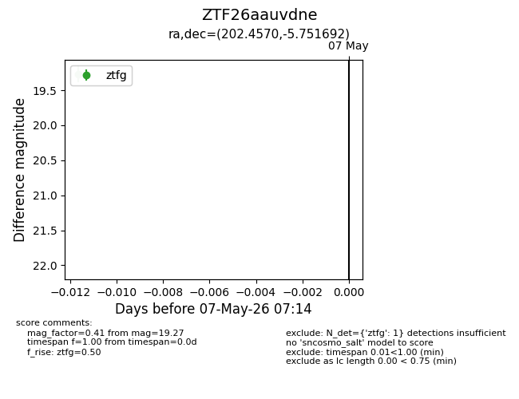
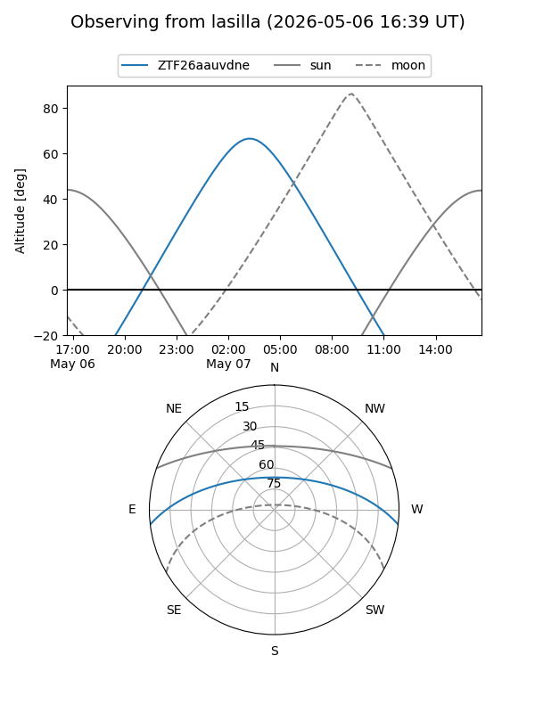
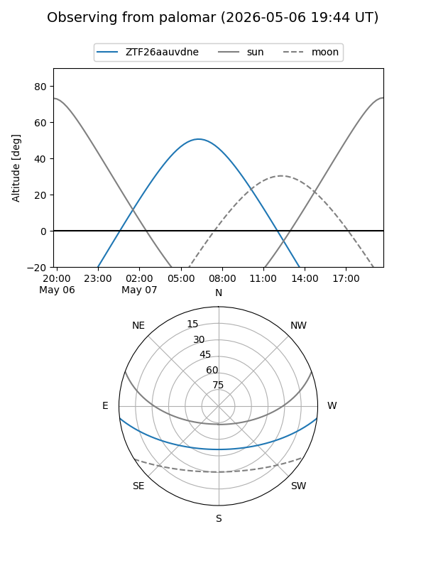

ZTF26aauvdne
Target ZTF26aauvdne at 2026-05-07 07:16
Aliases and brokers:
FINK: link
Lasair: link
ALeRCE: link
alt names
ZTF26aauvdne (ztf,fink_ztf)
Coordinates:
equatorial (ra, dec) = 202.4570,-5.75169
equatorial (HMS+DMS) = 13:29:49.67,-05:45:06.09
galactic (l, b) = (320.1126,+55.83419)
Flags:
Photometry:
last ztfg=19.27
1 ztfg detections
Lightcurve

Visibility


Additional plots